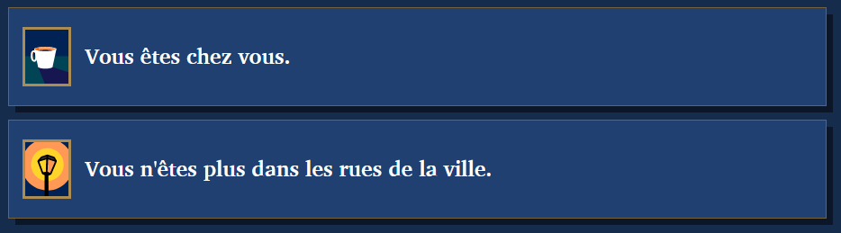
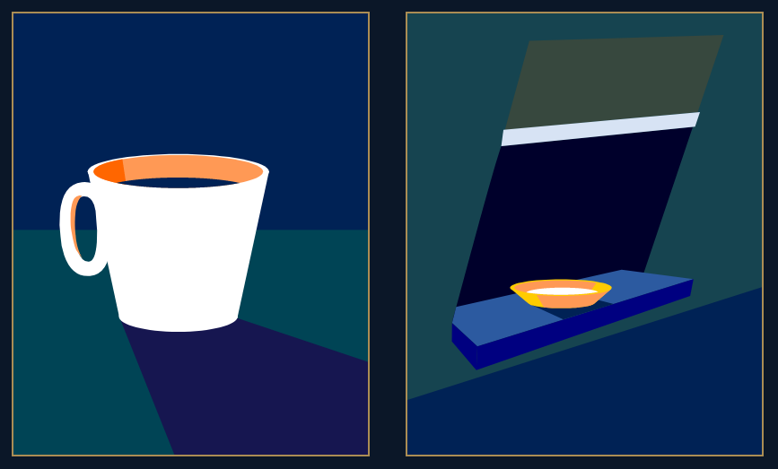

Revenir sur la page principale
Si vous n'avez pas encore ouvert le jeu, faites-le maintenant.
Normalement, vous vous retrouverez devant une interface similaire à celle-ci:
(Vous pouvez cliquer sur les images pour les agrandir)
À gauche se trouve le panneau principal du jeu. Dedans vous pouvez faire des choix et faire avancer l'histoire. La bande à droite est le panneau de progression du jeu. Comme son nom l'indique, il indique où vous en êtes dans l'histoire.
Si vous regardez le panneau principal, vous pouvez voir qu'il offre une série de choix. Si vous cliquez sur un des boutons "Choisir", l'histoire progresse.
Des fois, vous verrez des petites images à gauche de ce bouton, comme ceci:
Cela veut dire que certaines conditions doivent être remplies pour faire ce choix. Vous pouvez passer la souris sur chaque image pour savoir ce que le choix demande. Si le cadre de l'image est doré, la condition est remplie. S'il est rouge, toutefois, elle n'est pas remplie et il vous faudra faire quelque chose autre part pour rendre le choix disponible.
Notez également que beaucoup de choix, au lieu d'afficher des boîtes rouges, sont simplement invisibles avant que leurs conditions soient remplies. Pour accéder à ces choix, il faut en général atteindre le but donné à ce moment-là dans l'histoire.
Quand vous faites un choix, vous voyez un texte qui dit ce qu'il se passe après. En dessous, vous verrez parfois des boîtes comme celles-ci:
Ce sont les conséquences de votre choix. Elles vous disent ce qui vient de changer en résultat de vos actions.
En cliquant sur le bouton "Continuer", vous pouvez passer à la suite de l'histoire.
Si vous regardez le panneau de progression, vous pouvez voir un ou plusieurs rectangles comme celui-ci:
Chacun de ces carrés est un élément de progression. Si vous passez la souris dessus, vous pouvez voir ce qu'il représente. Ils peuvent vous informer sur l'endroit où vous vous trouvez, sur votre but actuel ou sur votre progression vers ce but. Vous l'aurez peut-être remarqué, mais chaque élément de progression peut être une condition pour un choix. Certains choix demandent que vous ayez un certain élément, et d'autres demandent que vous n'en ayez pas certains. La règle est simple: si la condition est rouge, cherchez encore.
Ne retenez pas tout ça par coeur. Allez juste jouer au jeu et venez ici si quelque chose n'est pas clair. Bon jeu!